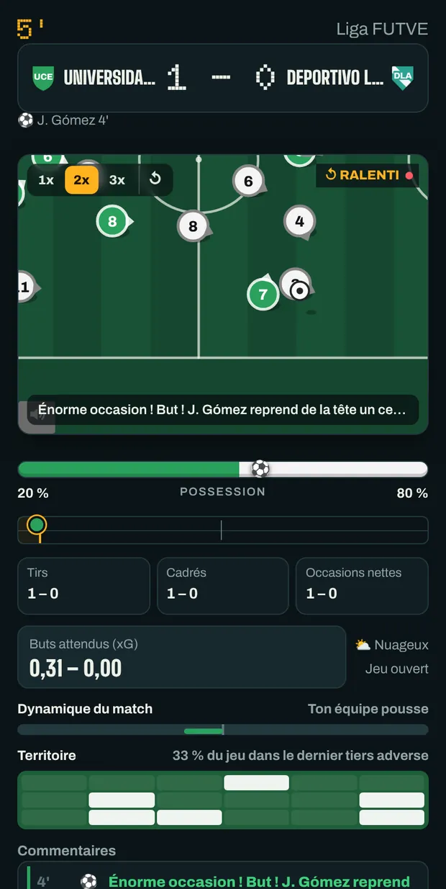
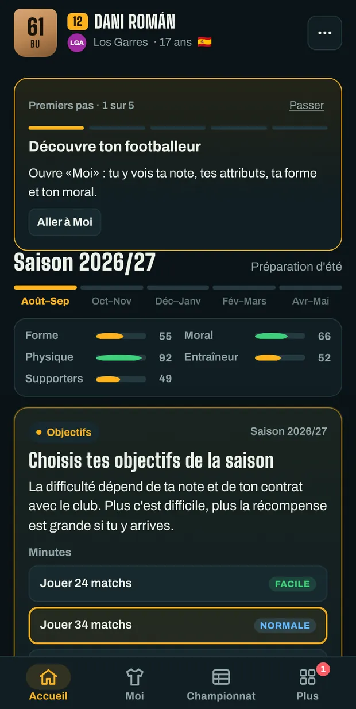
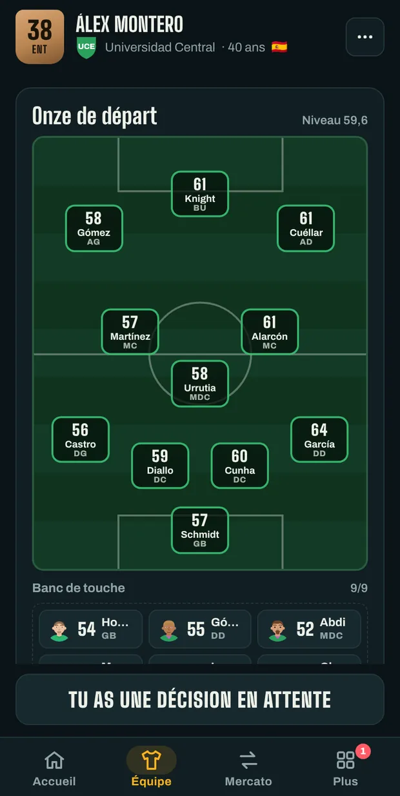
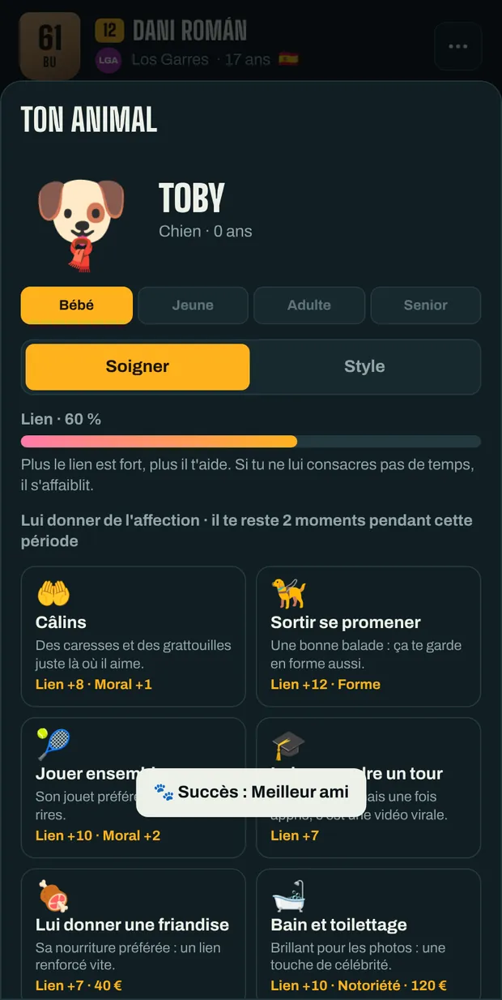

Crée ton footballeur et emmène-le jusqu'à la légende.
Signe dans un club, joue les matchs en direct et décide de chaque étape de ta carrière : contrats, presse, vestiaire et sélection. Ou prends place sur le banc et dirige toi-même l'équipe.
Gratuit et sans compte. Tes parties sont enregistrées dans ce navigateur.
Choisis comment jouer
Trois façons de commencer. Tu peux avoir plusieurs parties à la fois et passer de l'une à l'autre quand tu veux.
-
Carrière de joueur
Crée ton footballeur et vis toute sa carrière, du centre de formation à la retraite. Une fois les crampons raccrochés, tu peux continuer comme entraîneur.
-
Carrière d'entraîneur
Commence sur le banc du club de ton choix : recrutements, composition, prolongations et moral du vestiaire. Et changements tactiques en plein match.
-
Crée ton club
Invente un club avec son nom, ses couleurs et son blason, place-le dans le championnat de ton choix et fais-le grimper avec un effectif neuf.
Tous les modes se jouent en football masculin ou féminin.
Comment on joue
Une semaine de jeu tient en une touche. L'essentiel, le match et les décisions, se voit à ton rythme.




Ce qu'apporte une saison
Championnats, coupes et sélections du monde entier, avec des noms inventés inspirés du vrai football.
- Des matchs qui se regardent
- Les pastilles bougent selon la vitesse, la passe et le placement de chaque joueur. Penaltys et coups francs, c'est toi qui les tires.
- Décisions en dehors du terrain
- Conférences de presse, offres, polémiques dans le vestiaire et moments qui changent une carrière.
- Ton mercato
- Négocie tes contrats, demande un transfert ou, comme entraîneur, achète et vends pour équilibrer les comptes.
- Succès et Panthéon
- Des dizaines de succès, trophées et records qui restent même si tu commences une autre partie.
- En cinq langues
- Espagnol, anglais, allemand, italien et français. Change quand tu veux depuis le menu.
- Ta partie, avec toi
- Copie ta partie avec un code et continue à jouer dans un autre navigateur ou dans l'application Android.
Ton premier match commence maintenant
Rien à installer, aucune inscription. Si tu fermes l'onglet, ta partie t'attend là où tu l'as laissée.